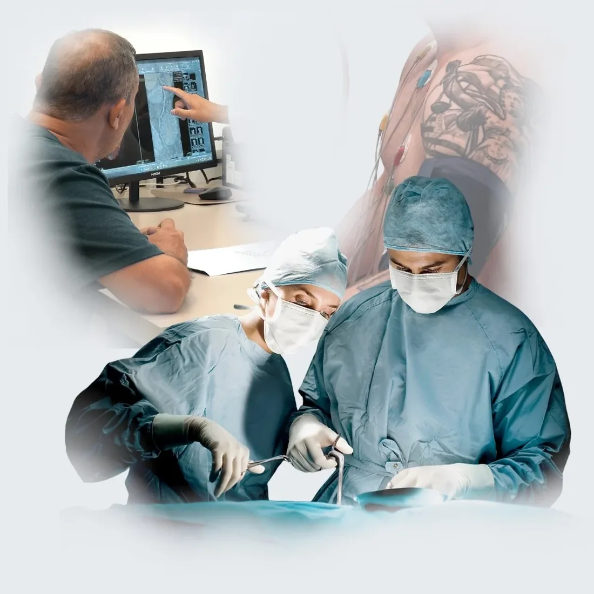
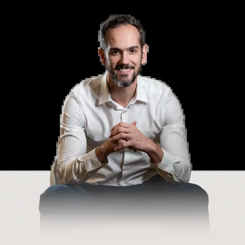
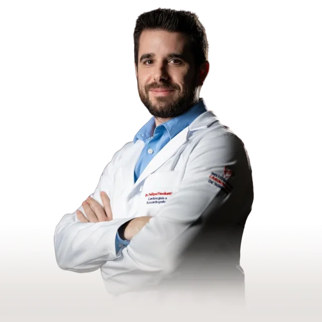
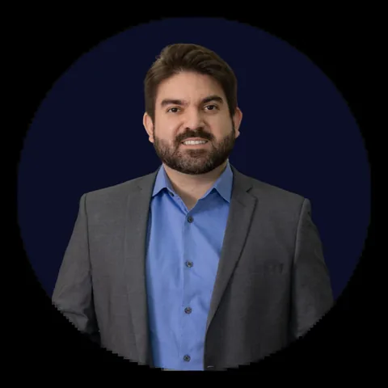
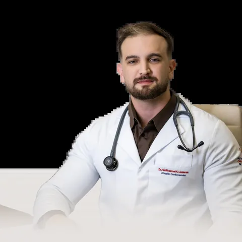
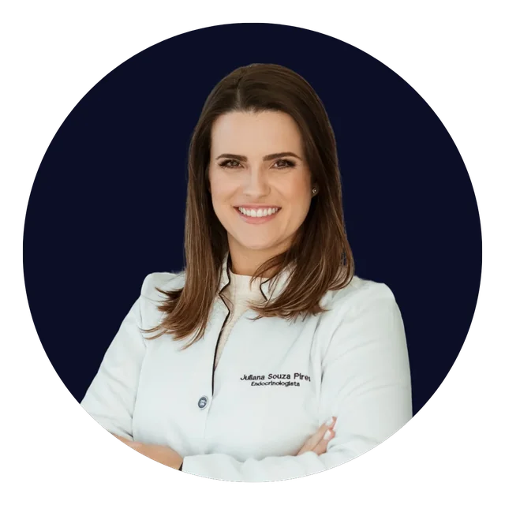

Instituto de Cardiologia de Sorriso
Do check-up à cirurgia, todo cuidado que o seu coração precisa, aqui em Sorriso.
O ICS foi construído para cuidar do seu coração de ponta a ponta: da prevenção à cirurgia cardiovascular, com diagnóstico avançado, tratamento completo e especialidades integradas. Um time, uma estrutura, sem precisar viajar.
- Heart Team Completo
- 6 Cardiologistas Especializados
- Medicina Baseada em Evidências
- Sorriso – MT

Uma realidade que muitos conhecem
Por muito tempo, cuidar bem do coração exigia uma viagem
Quem mora no interior do Mato Grosso sabe bem o que é ouvir "esse procedimento só tem em Cuiabá", e o que isso significa na prática. Dias longe de casa, custo de deslocamento, espera em fila de outro estado, família distante no momento em que você mais precisa de suporte. O ICS foi construído para que essa realidade ficasse no passado.
Horas de viagem para um procedimento urgente
Quando o problema é no coração, cada hora conta. Cateterismo, ablação, cirurgia cardiovascular — procedimentos que precisam de agilidade viravam dias de deslocamento para quem vivia no norte do Mato Grosso. O tempo perdido nessa viagem é tempo que o coração não tem de sobra.
Especialistas que não se conversam
O cardiologista que te atende, o endocrinologista que cuida do seu diabetes, o médico que acompanha seu rim — cada um no seu consultório, sem integração entre eles. Quem fica no meio dessa fragmentação é sempre o paciente, sem um plano clínico unificado que considere sua saúde por inteiro.
Diagnóstico tardio por falta de tecnologia
Sem acesso a ecocardiograma avançado, angiotomografia coronária ou ressonância magnética cardíaca na própria cidade, o diagnóstico atrasa semanas. No coração, esse atraso tem consequências que nenhum tratamento posterior consegue desfazer completamente.
A doença cardíaca não agenda horário e não espera a fila andar em outra cidade. Foi para mudar essa realidade que o ICS foi construído — para que a cardiologia de excelência esteja onde as pessoas estão, quando elas precisam.
O modelo que muda o cuidado
O que o ICS chama de Hub Cardiológico
Nos grandes centros de cardiologia do Brasil, existe um modelo chamado Heart Team — um time de especialistas que discute cada caso em conjunto antes de definir a conduta. Hemodinâmica, eletrofisiologia, imagem cardiovascular e cirurgia no mesmo espaço, olhando para o mesmo paciente.
O ICS trouxe esse modelo para Sorriso. E foi além: integrou ao Heart Team as especialidades que completam o cuidado cardiovascular — endocrinologia, nefrologia e neurologia. O resultado é que nenhum caso é decidido por um médico sozinho, e o paciente nunca precisa recomeçar do zero em outra cidade.

Criamos não uma clínica, mas um instituto. Não um nome, mas um time. O maior diferencial do ICS é que nenhum caso é decidido por um médico sozinho.
Heart Team
Seis cardiologistas. Seis subespecialidades. Um time construído para resolver qualquer caso.
Cada médico do ICS foi formado em um dos principais centros de cardiologia do Brasil — Instituto Dante Pazzanese, Instituto de Cardiologia de Porto Alegre e Santa Casa de Porto Alegre. E cada um domina uma área diferente da cardiologia. Reunidos, eles cobrem todo o espectro do cuidado cardiovascular — do diagnóstico por imagem à cirurgia de alta complexidade.
Tomografia e Ressonância Cardíaca
Formação: Instituto de Cardiologia de Porto Alegre
Especialista em tomografia e ressonância magnética cardíaca, o Dr. Rafael traz para Sorriso exames que antes só existiam nas capitais. Com eles, é possível avaliar a anatomia e a função do coração com precisão que transforma a qualidade do diagnóstico e da decisão clínica.

Arritmias e Eletrofisiologia
Formação: Instituto de Cardiologia de Porto Alegre
O Dr. Bruno é responsável pelo diagnóstico e tratamento das arritmias no ICS — incluindo ablação por cateter e implante de marcapassos e desfibriladores. Casos que antes exigiam transferência para grandes centros têm resolução aqui, dentro da mesma equipe.

Ecocardiografia
Formação: Instituto de Cardiologia de Porto Alegre
O ecocardiograma nas mãos de um especialista vai muito além de uma imagem do coração — orienta a conduta clínica em tempo real. O Dr. Felipe traz essa precisão diagnóstica para o ICS, com avaliação estrutural e funcional que serve de base para as decisões do Heart Team.
Cardiologia Intervencionista
Formação: Instituto Dante Pazzanese de Cardiologia
Formado no Dante Pazzanese — referência nacional em cardiologia intervencionista — o Dr. Edgar realiza cateterismo cardíaco e angioplastia coronária em Sorriso. Procedimentos que antes dependiam de transferência para outro estado estão disponíveis na região, com quem cuida do paciente desde o início.

Eletrofisiologia e Cardiologia do Esporte
Formação: Instituto de Cardiologia de Porto Alegre
O Dr. Danilo tem uma combinação rara: eletrofisiologia e cardiologia do esporte. Cuida tanto de atletas que precisam de avaliação antes de competir quanto de pacientes com arritmias que precisam de reabilitação cardiovascular, com um olhar que une desempenho e segurança.

Cirurgia Cardiovascular
Formação: Santa Casa de Porto Alegre
A presença de um cirurgião cardiovascular dentro do Heart Team muda tudo. O Dr. Guilherme é responsável por revascularizações miocárdicas, cirurgias valvares e correção de cardiopatias estruturais, e por estar na mesma equipe desde o início, a decisão de quando operar é tomada com mais precisão e segurança.
Equipe Multidisciplinar
O coração não adoece sozinho
Quem tem diabetes sabe que o coração está em risco. Quem tem doença renal crônica sabe que o coração paga essa conta. Quem teve um AVC muitas vezes descobriu depois que o coração tinha algo a ver com isso. A cardiologia de verdade leva essas conexões a sério, e o ICS construiu seu time exatamente com essa visão.

Endocrinologia
Diabetes e dislipidemias estão entre as condições que mais aceleram o risco de infarto e AVC. O acompanhamento endocrinológico dentro da mesma equipe permite que o controle metabólico e o tratamento cardiológico andem juntos — com comunicação direta entre os especialistas, sem que o paciente precise fazer essa ponte sozinho.
Nefrologia
O rim e o coração têm uma relação tão próxima que a medicina chama de síndrome cardiorrenal quando um começa a afetar o outro. Pacientes com doença renal crônica têm risco cardiovascular significativamente elevado, e o acompanhamento nefrológico integrado ao Heart Team muda a qualidade das decisões clínicas.
Neurologia
A fibrilação atrial — uma arritmia tratada pelo cardiologista — é uma das principais causas de AVC. A investigação neurológica completa e a integração entre neurologia e cardiologia são essenciais para quem teve um evento cerebrovascular e precisa entender a origem cardíaca por trás dele.
No ICS, o cuidado com o coração considera tudo que afeta ele. Porque tratar um órgão ignorando o contexto clínico ao redor dele é só parte do que o paciente precisa.
Linha Cardiovascular Completa
Do check-up à cirurgia cardiovascular. Tudo aqui, sem precisar viajar.
A jornada de cuidado cardiovascular tem etapas muito diferentes, e cada uma exige um especialista. No ICS, todas essas etapas estão dentro da mesma estrutura, com a mesma equipe, com o mesmo histórico do paciente. Você não começa do zero cada vez que precisa de um novo nível de cuidado.
Prevenção
Check-up cardiológico completo, estratificação de risco individualizada e controle de fatores como hipertensão, diabetes e colesterol — antes que o problema apareça.
Diagnóstico
Arsenal completo de exames — ecocardiograma, Holter, MAPA, teste ergométrico, angiotomografia coronária, ressonância cardíaca e muito mais, com laudo especializado.
Tratamento
O Heart Team define a melhor conduta para cada caso: clínica, intervencionista ou cirúrgica. A decisão é compartilhada entre especialistas, não tomada por um médico sozinho.
Reabilitação
Reabilitação cardíaca estruturada e acompanhamento contínuo para o retorno seguro às atividades, com o suporte da cardiologia do esporte quando necessário.
Portfólio de Exames
Tecnologia de capital. A poucos minutos da sua casa.
Ecocardiograma avançado, angiotomografia coronária, ressonância magnética cardíaca, ergoespirometria — exames que antes só existiam em grandes centros estão disponíveis no ICS e na sua rede parceira. Diagnóstico preciso significa decisão clínica mais rápida e resultado melhor para o paciente.
O que os números mostram
O coração está adoecendo cada vez mais cedo
Os dados do Ministério da Saúde e das principais sociedades cardiológicas mostram uma tendência que a medicina já não consegue ignorar: eventos cardiovasculares estão atingindo pessoas mais jovens, em ritmo crescente. Cuidar do coração não pode mais esperar os 60 anos.
Alimentação Ultraprocessada
Consumo crescente eleva triglicerídeos, LDL e pressão arterial desde a adolescência — acelerando a aterosclerose por décadas antes dos sintomas.
Sedentarismo Digital
O avanço dos dispositivos eletrônicos reduziu drasticamente a atividade física entre jovens e adultos, criando uma geração com perfil de risco cardiovascular elevado.
Uso de Anabolizantes
A venda de esteroides cresceu 670% entre 2020 e 2024 (ANVISA), com efeitos cardiotóxicos comprovados e alto impacto cardiovascular em adultos jovens.
Sequelas da COVID-19
Estudos mostram aumento significativo de infartos em jovens de 30 a 34 anos no período pós-pandemia — miocardite e disfunção endotelial como mecanismos principais.
Fontes: Ministério da Saúde / DataSUS; Sociedade Brasileira de Cardiologia; ANVISA; REASE 2024; Cochrane Reviews; ACC/AHA Guidelines; OMS / World Heart Federation.
Capilaridade Regional
Uma rede integrada que cobre o norte do Mato Grosso
O ICS funciona como centro de referência de uma rede que já está presente em três cidades estratégicas da região. Hospitais parceiros, centros de imagem integrados e clínicas de hemodinâmica garantem que, quando o paciente precisa de um procedimento mais complexo, o encaminhamento acontece dentro da mesma rede — com agilidade e sem recomeçar do zero.
Clínicas de Hemodinâmica
- Intercor Sorriso
- Intercor Sinop
- Intercor Lucas do Rio Verde
Hospitais Integrados
- Hospital 13 de Maio
- Hospital Santo Antônio
- Hospital São Lucas
Centros de Imagem
- CDI 13 de Maio
- CDI Prime
- Clínica São Camilo
Quando você chega ao ICS e o seu caso exige um procedimento intervencionista ou cirúrgico, o encaminhamento acontece dentro da mesma rede — com os mesmos médicos que já conhecem seu histórico, com fluxo estruturado e sem aquela sensação de recomeçar tudo do zero em outro lugar. Essa integração é o que torna o cuidado mais rápido, mais seguro e mais humano.
Dúvidas frequentes
Perguntas frequentes
Um cardiologista clínico resolve casos de rotina com competência. O ICS foi construído para resolver qualquer desafio cardiológico, incluindo os complexos. A diferença está no Heart Team: quando seu caso precisa de uma segunda opinião especializada, de um olhar do eletrofisiologista ou do cirurgião cardiovascular, eles já estão na mesma equipe. Não há encaminhamento para outra cidade. Há discussão de caso entre especialistas, na mesma tarde.
A partir dos 40 anos, o check-up cardiológico passa a ser recomendado mesmo para quem se sente saudável, porque a maioria das doenças cardiovasculares é silenciosa até o primeiro evento. Para quem tem fatores de risco como hipertensão, diabetes, colesterol alto, tabagismo ou histórico familiar de infarto ou morte súbita, a avaliação deve ser feita antes disso. Atletas e praticantes de atividade física regular também precisam de avaliação periódica, independentemente da idade.
Sim. Por meio da rede Intercor — presente em Sorriso, Sinop e Lucas do Rio Verde, e da integração com o Hospital 13 de Maio, o ICS realiza cateterismo cardíaco, angioplastia coronária, ablação por cateter, implante de marcapasso, desfibrilador e ressincronizador. Procedimentos que antes exigiam viagem para Cuiabá ou São Paulo estão disponíveis na região, com a mesma equipe que acompanha seu caso desde o início.
Sim. Você pode agendar consulta diretamente pelo WhatsApp ou pelo site, sem necessidade de encaminhamento prévio. Se você tem sintomas, fatores de risco ou simplesmente quer fazer um check-up, basta entrar em contato. Nossa equipe vai orientar sobre o melhor caminho para o seu caso.
Heart Team é o modelo onde cardiologistas de diferentes subespecialidades discutem casos complexos em conjunto, chegando à melhor decisão para cada paciente. No ICS, quando seu caso tem uma complexidade que envolve mais de uma área — por exemplo, uma arritmia associada a doença coronária que pode precisar de intervenção cirúrgica — os especialistas se reúnem para definir a conduta mais segura e eficaz. Isso é o que diferencia um hub de um consultório isolado: decisões coletivas baseadas em evidência, não opiniões individuais.
Você chegou até aqui por um motivo
O seu coração merece cuidado completo, aqui em Sorriso.
Não espere o coração pedir socorro. O check-up cardiológico é o único momento em que você pode agir antes, e as evidências mostram que isso faz toda a diferença. O ICS está aqui para isso.
Agendar pelo WhatsApp